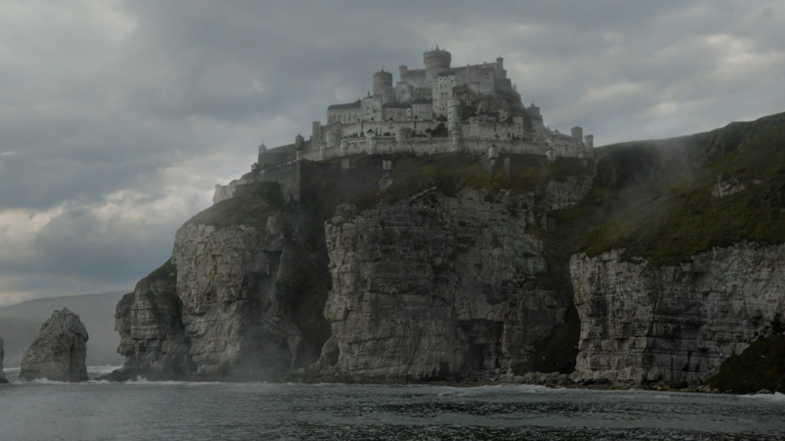
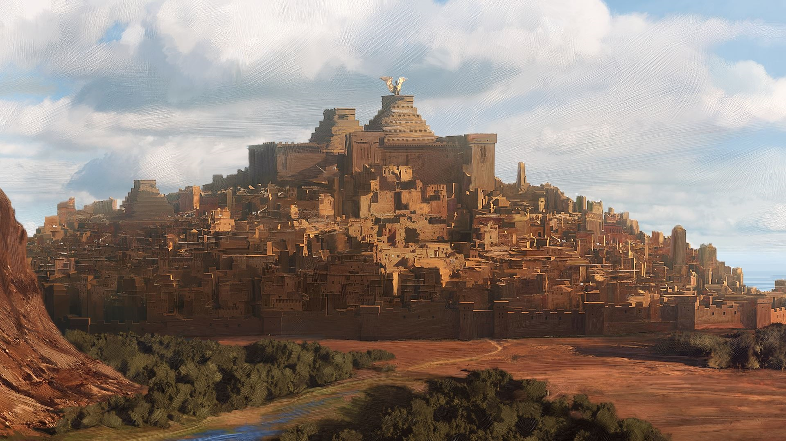

Houses
House Stark
House Stark of Winterfell is the main house of the north. In old days they ruled this region as Kings of Winter.
House Lannister
House Lannister is the main house of the westerlands. Their seat is Casterly Rock, though another branch exists in Lannisport.
House Targaryen
House Targaryen is a noble family who once ruled the Seven Kingdoms. They built the Aegonfort in the capital city of King's Landing

House Baratheon
House Baratheon is the main house in the stormlands. Their seat, Storm's End, is an ancient castle raised by the Storm Kings.

House Tyrell
House Tyrell of Highgarden is a large, wealthy house, its wealth is only surpassed by House Lannister, and can field the greatest armies.
House Martell
House Nymeros Martell, usually simply called House Martell is the ruling house of Dorne. Prince of Dorne rules Dorne from Sunspear.
House Greyjoy
House Greyjoy rules over the Iron Islands, a collection of islands off the coast of Westeros, from the Seastone Chair in the castle of Pyke.
House Tully
House Tully is the house of the Lord Paramount of the Trident, who rules over the riverlands from the Tully seat of Riverrun.
House Arryn
House Arryn is the principal noble house in the Vale of Arryn. Their main seat is the Eyrie, which is considered impregnable.
Cities
Winterfell
Winterfell is the ancestral castle and seat of power of House Stark and is considered to be the capital of the north.
King's Landing
King's Landing is the capital of the Seven Kingdoms, is the site of the Iron Throne and the Red Keep, which is the seat of the king.
Casterly Rock
Casterly Rock, is a castle and the seat of House Lannister, is carved out of a great stone hill colossal rock beside the Sunset Sea.
Highgarden
Highgarden is a castle which serves as the seat of House Tyrell, the regional capital of the Reach, it lies on an important crossroad. Mace Tyrell is the Lord of Highgarden.
Storm's end
Storm's End is the seat of House Baratheon, the Lords Paramount of the Stormlands. One of the strongest castles in the realm.

Riverrun
Riverrun is the castle of House Tully. It is situated in the western riverlands, at the confluence of two big rivers.
Pyke
Pyke is a castle located on the island of the same name, which is one of the eight major Iron Islands. It is the seat of House Greyjoy.
Harrenhal
Harrenhal is the largest castle in Westeros. But, since its burning by dragonfire in Aegon's Conquest, it has become a ruinous place.
Eyrie
The Eyrie is an ancient castle and seat of House Arryn. Although small compared to the seats of other Great Houses in Westeros, the Eyrie is considered impregnable to attack.
Dragon Stone
Dragonstone is a castle located at the entrance to Blackwater Bay. It was the original seat of House Targaryen in Westeros.
Braavos
Braavos is the wealthiest and the most powerful of the Free Cities. The youngest among them, Braavos was founded by escaped slaves.
Volantis
Volantis is the oldest and the proudest of the Nine Free Cities, its also one of the greatest, richest, and most powerful among them.
Pentos
Pentos is one of the Free Cities of western Essos. It is a port located on the eastern coast of the Bay of Pentos. During the past two centuries, Pentos lost four of six wars with Braavos.
Meereen
Meereen is the largest of the three great Slaver Cities of Slaver's Bay. It is ruled by the Great Masters, the heads of Meereen's slaving families.
Yunkai
Yunkai is one of the Slaver Cities on the eastern coast of Slaver's Bay. Ruled by the Wise Masters, Yunkai's main export is bed slaves.
Qarth
Qarth is an ancient port city. It has been referred to as the Queen of Cities, a title also claimed by Yunkai in Slaver's Bay.